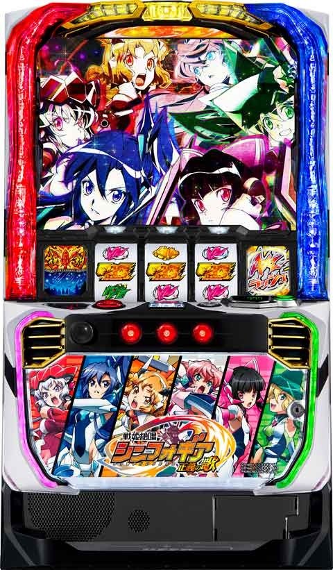

Lシンフォギア

【天井情報】
777G+α AT当選
朝イチは498G+α短縮
【リセット判別】
ガックンありと思われる
【有利区間について】
差枚+2000枚前後で有利切れ？
有利区間切れで絶唱バトルに突入。
履歴の見方。エンディング経由はATの獲得枚数が200枚以上。
RB履歴の次が6-10Gの時は絶唱突入のサイン。
絶唱バトル後は店データ機と液晶のG数が40くらいずれるらしい？
{kind=link}
{kind=link}
狙い目
【リセット狙い】
230Gから
50-100Gゾーン狙い 40Gから
【AT間天井狙い】
390Gから
一撃1000枚以上後 450Gから
【ゾーン狙い】
※前兆は70G、270G前後から開始？90G、290G前後で終了？
・50-100Gゾーン
60Gから(だいぶ弱い)
AT獲得枚数95枚未満後 0Gから
・250-300Gゾーン
AT獲得枚数95枚未満後 230Gから
それ以外 245Gから
【抜剣メーター狙い】
最大10回でギアフラグ高確へ
9回目から？あまり強くなさそう。
{kind=link}
【必殺技】
液晶右下に表示。AT中のギアVチャンス時に使用される。
どの程度ボーダー下げれるかわからないため感覚です。
・激槍烈破 30Gボーダー下げる
・弾突砲雷
積極派 単体で打てそう
慎重派 200Gボーダー下げる
・夢幻掌破 単体で打てそう
{kind=link}
【有利区間切れ狙い】
不明
やめ時
①絶唱バトル突入
絶唱バトル敗北後はフリーズ高確+CZモード天国のため250Gゾーンまで。
250GゾーンのCZ当選するまではモード転落しないため、そこまでに他の契機でAT当選した場合は引き続き250Gゾーンまで。
②絶唱バトル非突入
AT獲得枚数が100枚未満なら50G-100Gゾーンまで。
前回、エクスドライブステージ移行してる場合も同様に50G-100Gゾーンまで。
液晶左下にアダム(朝イチ以外)がいる時はCZモード天国濃厚。250Gゾーンまで。
③本前兆中にギアフラグを引いた場合
CZやAT後は即前兆確認。
①.②.③に該当しない場合は1G回してやめ。
【終了画面の示唆】
豪華テーブル、黄金テーブルは50-100の天国ゾーンは確認した方が良さそう？
アダムの帽子は実践上弱そう。
その他
・AT終了画面の裏ボタン
{kind=link}
・アイテム示唆
{kind=link}
参考元
基本情報
- メーカー: SANKYO
- 機械割: 98.2% 〜 114.9%
- 導入開始日: 2024年07月08日（月）
- ゲーム性概要: 通常時はおもにレア役からAT直撃、ゲーム数消化→CZからATを目指すゲーム性。AT中は規定枚数獲得やレア役でギアVチャンスを引き当て、ギアVチャンスを成功させてギアVアタックでATゲーム数を加算させつつ上位ATを目指す流れとなる。 エンディング到達後は有利区間がリセットされ絶唱バトルに突入。絶唱バトルに勝利すれば上位ATへ突入かつ、上位AT後は再び絶唱バトルへ突入するため上限枚数を気にすることなく出玉を増やすことができる。


打ち方
打ち方・小役
打ち方（小役狙い）
［最初に狙う絵柄］

左リール上段付近にBARを目押し。
［BAR下段停止時］ 成立役：ハズレorリプレイorベルorギアフラグorフォニック目

［角チェリー停止時］ 成立役：チェリーorギアフラグ

［スイカ上段停止時］ 成立役：スイカorギアフラグ

［レア役の停止例］

変則押しはNG

ナビ非発生時は左1stでの消化を推奨だ。
解析情報通常時
小役関連
ギアフラグ

あらゆるタイミングで活躍する強レア役的な存在で、通常時はもちろん、AT中・特化ゾーン中も活躍。抜剣（ギアフラグの高確状態）突入はタイミング次第で強力なトリガーとなり得る。通常時は内部状態と現在のギアフラグモードを参照してATが抽選。AT本前兆中はATストックが抽選される。
ギアフラグの確率
| 滞在状態 | 確率 |
|---|---|
| 通常時 | 約1/198 |
| 抜剣中 | 約1/21 |
| 抜剣バースト中 | 約1/7 |
| トータル（各状態を加味した合算値） | 約1/150 |
ギアフラグのAT当選率
| 滞在状態 | 当選率 |
|---|---|
| 通常 | 約26% |
| 高確 | 約50% |
小役確率
| 役 | 確率 |
|---|---|
| フォニック目 | 約1/40 |
| ギアフラグ | 約1/198 （抜剣などを含めると約1/150） |
| チェリー | 約1/59 |
| スイカ | 約1/74 |
全レア役合算は約1/28
レア役ごとの役割（通常時）
| 役 | 役割 |
|---|---|
| フォニック目 | おもに抜剣メーター加算など |
| ギアフラグ | 強レア役的な扱い |
| チェリー | おもに高確移行を抽選 |
| スイカ | おもにてがみちゃんすを抽選 （期待度約20～25%） |
フォニック目は中1stナビからも出現する。
スイカ成立時のてがみちゃんす当選率
| 滞在状態 | 当選率 |
|---|---|
| 通常 | 約13% |
| 高確 | 約51% |
スイカ後は約3Gの前兆を経ててがみちゃんすが告知される。
レア役契機のAT当選率
| 設定 | ［通常］ギアフラグ | ［高確］ギアフラグ | ［高確］チェリー |
|---|---|---|---|
| 1 | 約26% | 約50% | 約4% |
| 2 | 約26% | 約50% | 約6% |
| 4 | 約26% | 約50% | 約11% |
| 5 | 約26% | 約50% | 約17% |
| 6 | 約26% | 約50% | 約21% |
※ギアフラグの当選率はギアフラグモードを考慮した平均値
内部状態とギアフラグモードを参照して抽選。チェリーは高確中にのみ抽選される。
内部状態関連
高確状態

おもにチェリー時の抽選で高確へ移行。滞在中はレア役時のAT当選率やスイカ時のてがみちゃんす当選率が優遇される。
チェリー成立時の高確移行率
| 高確ゲーム数 | 移行率 |
|---|---|
| 20G | 約25% |
| 30G | 約6% |
高確中は上記抽選値で高確ゲーム数の上乗せを抽選する。
モード
通常モード
通常モードはおもに有利区間移行時とAT終了後に抽選。基本的に通常・天国準備・天国の3種類で、ゲーム数天井は通常・天国準備なら777G＋α、天国なら100G以内となる。
AT中の枚数獲得時のテーブルを抽選するATモードも存在しているが、こちらはあくまでAT中に活躍。 ただし、ATモードは通常時から決まっているため、通常時の演出でも示唆される。
通常モードの特徴
| モード | 特徴 | 天井 |
|---|---|---|
| 通常 | 基本のモード | 777G＋α |
| 天国準備 | 次回天国準備以上（転落なし） | 777G＋α |
| 天国 | 100G以内にAT当選 | 100G以内 |
有利区間移行時のモード移行率（設定1）
| 移行先モード | 移行率 |
|---|---|
| 通常へ | 約38% |
| 天国準備へ | 約34% |
| 天国へ | 約28% |
AT終了後のモード移行率（設定1）
| 移行先モード | 通常滞在時 | 天国準備滞在時 | 天国滞在時 |
|---|---|---|---|
| 通常へ | 約84% | － | 約76% |
| 天国準備へ | 約8% | 約58% | 約4% |
| 天国へ | 約8% | 約42% | 約20% |
高設定ほど天国移行率＆天国ループ率が優遇される。
［ATが100枚以下で終わると天国のチャンス］ ATが100枚以下で終わった場合は、前回のモード不問で天国移行率が大幅にアップする。
ATが100枚以下で終わった後の天国移行率（設定1）
| 設定 | 移行率 |
|---|---|
| 1 | 約42% |
CZモード概要
CZモードはCZ当選の規定ゲーム数を管理していて、天国なら250G以内にCZが当選。 CZモードの天国はゲーム数当選→CZまで終わらないため、規定ゲーム数や自力でATに当選していればモードが維持される。
CZモード
| 項目 | 内容 |
|---|---|
| モードの種類 | 通常・天国など |
| CZ抽選ゲーム数 | 150・250・350・550G前後 |
| モード昇格契機 | AT終了後に昇格抽選 |
| その他 | 天国は250G前後までのCZ当選濃厚かつ 250G前後でのCZ当選以外では終了しない |
| その他 | 上位AT終了後は天国移行濃厚 |
CZ天国移行率
| 移行タイミング | 移行率 |
|---|---|
| 設定変更後 | 約12% |
| AT終了後 | 約12% |
| 上位AT終了後 | 100% |
エクスドライブモード
天国モード（100G以内にAT当選）が高い確率でループするモード。てがみ獲得時や絶唱バトル敗北時に移行する可能性がある（突入のメインは絶唱バトル敗北後）。 あくまで天国がループしやすいモードなので、エクスドライブモードで100Gをスルーするケースもアリ。 突入時の一部でエクスドライブステージへ移行する。
エクスドライブモード性能
| 項目 | 内容 |
|---|---|
| 移行契機 | てがみ獲得の一部、絶唱バトル敗北後の一部 |
| 滞在中の特徴 | 天国モードが高確率でループ |
| 期待値 | 滞在中は機械割が設定6以上 |
| その他 | 高設定ほど移行しやすい |
設定1・2よりも設定5・6のほうが数十倍突入しやすい。
ギアフラグモード概要
3枚ベル・フォニック目・チェリー・スイカ・ギアフラグが 3回以上続くと滞在している通常モードを参照してギアフラグモードの昇格を抽選 。上位モード移行時はギアフラグ成立でAT当選の大チャンスとなる。 ギアフラグモードは 「通常時のギアフラグ成立まで」 維持されるため、ギアフラグ以外でATに当選した場合はAT終了後も維持される。
見た目上での判別は難しいので状況次第ではあるが、ギアフラグ以外でATに当選した場合はATが終わってもギアフラグ成立まで追ってみるのもアリだ。
［設定変更時・AT終了後］ギアフラグモード移行分布
| 通常モード | ギアフラグモード | ||||
|---|---|---|---|---|---|
| 通常モード | モード1 | モード2 | モード3 | モード4 | モード5 |
| 通常 | 優遇 | やや優遇 | 昇格あり | 昇格あり | 昇格あり |
| 天国準備 | 超優遇 | やや優遇 | 昇格あり | 昇格あり | 昇格あり |
| 天国 | 超優遇 | 昇格あり | 昇格あり | 昇格あり | 昇格あり |
※AT終了後の抽選は昇格のみで降格はない
［ベル以上3連時］ギアフラグモード昇格率
| ギアフラグモード | 昇格率 |
|---|---|
| モード1→2 | 激高 |
| モード2→3 | 高 |
| モード3→4 | やや高 |
| モード4→5 | 抽選あり |
ギアフラグモード滞在比率
| ギアフラグモード | 比率 |
|---|---|
| モード1 | 激高 |
| モード2 | 高 |
| モード3 | 低 |
| モード4 | 低 |
| モード5 | 低 |
［通常時］ギアフラグ成立時のAT期待度
| ギアフラグモード | 通常滞在時 | 高確滞在時 |
|---|---|---|
| モード1 | 中 | 高 |
| モード2 | 中 | 高 |
| モード3 | 中 | 高 |
| モード4 | 高 | 激高 |
| モード5 | 濃厚 | 濃厚 |
［AT本前兆中］ギアフラグ成立時のATストック期待度
| ギアフラグモード | 通常滞在時 | 高確滞在時 |
|---|---|---|
| モード1 | 低 | 低 |
| モード2 | 低 | 低 |
| モード3 | 低 | 低 |
| モード4 | 低 | 高 |
| モード5 | 濃厚 | 濃厚 |
ATストック時はAT終了後に即前兆へ移行して再度ATへ突入する。
抜剣（ギアフラグ高確）
抜剣概要

フォニック目を引くたびに抜剣メーターが溜まっていき、MAX（最大で10回）になると10G間の抜剣へ移行。抜剣中はギアフラグ高確率状態（約1/21）になり、逆押しナビからのギアフラグが揃いやすい。 ほぼすべての状態で突入する可能性があり、通常時ならAT当選のチャンス、CZ中なら成功のチャンスというように、様々恩恵を受けられる。
平均した移行確率は約1/300。
［抜剣メーター］

［フォニック目］

抜剣バースト概要

抜剣中にナビなしのギアフラグ（左1stのいわゆるレアなギアフラグ）から突入するST型のギアフラグ超高確率状態。10G以内に 約1/7 のギアフラグを引けば、10Gが再セットされる。
平均した移行確率は約1/7000。
抜剣発動までのフォニック目規定回数
| フォニック目 | 振り分け |
|---|---|
| 10回 | 約51% |
| 7回 | 約30% |
| 3回 | 約18% |
| 1回 | 約1% |
規定回数が10回未満の場合、見た目上、フォニック目1回で複数のメーターが加算されることがある。
てがみちゃんす
てがみちゃんす概要

スイカ時の抽選で突入する「てがみ」状態で、規定ゲーム数以内にフォニック目かレア役成立でてがみ獲得濃厚。てがみ獲得＝AT当選のチャンスで、開封時の表示内容によって期待度や展開が示唆される。
てがみ保持中はのスイカは、てがみ内容の昇格を抽選（フェイク時はAT、本前兆時はギアVチャンス）する。昇格当選率は 約10% だ。
［継続ゲーム数は画面右下に表示］

画面右下のウインドウが開いててがみちゃんす開始。消化中は残りゲーム数も表示される。
［手紙の表示内容］

てがみの内容（一部）
| てがみ内容 | 示唆 |
|---|---|
| 一撃必愛 | デフォルト |
| わたしのおひさま | 未来チャンス突入の期待大 |
| 正義の歌 | バトル系連続演出の期待度アップ |
| 生きるのを～ | バトル系連続演出後半発展の期待大 |
| 鉄火場 | 連続演出等の発展時に出現 |
| 歌女 | 連続演出等の発展時に出現 |
| テンションUP | キャラソングのテンションアップの期待大 |
| 参戦待機中ッ！ | キャラソング中のテンションアップ＆ ユニゾン発生の期待大 |
| 参戦 | バトル系連続演出後半発展の期待大 |
| だとしてもッ！ | 復活 |
| FEVER | 絶唱濃厚 |
| ギアVチャンス | ギアVチャンス濃厚 |
基本的にてがみ開封のタイミングは遅いほど期待度がアップする。
必殺技ストック
必殺技ストック概要

AT前兆失敗時やAT終了時の一部で必殺技をストックする場合がある。この必殺技は、AT中のギアVチャンス突入時にアイコン毎の演出が発生→ゲーム数が上乗せされる。
必殺技の序列は撃槍烈破＜弾突砲雷＜夢幻掌破だ。
必殺技ストックごとのギアVチャンス時上乗せゲーム数
| 必殺技 | 上乗せゲーム数 |
|---|---|
| 撃槍烈破 | ＋30G |
| 弾突砲雷 | ＋50G |
| 夢幻掌破 | ＋100G |
※アイコンなしからの必殺技発生は＋15G以上
一番性能の低い撃槍でも所持中の機械割は約103%（設定1）と高いため、AT当選かつギアVチャンスまで打つことをオススメだ。
タイミング別・必殺技ストック当選率
| タイミング | 当選率 |
|---|---|
| AT前兆失敗時 | 約3% |
| AT終了時 | 約5% |
AT終了時の必殺技ストック当選率詳細
| 必殺技 | 当選率 |
|---|---|
| 撃槍 | 約3% |
| 弾突 | 約1% |
| 夢幻 | 約1% |
すでに必殺技を所持している場合は同じ確率で必殺技の昇格を抽選する。
届け未来の想いチャンス
届け未来の想いチャンス概要

AT前兆失敗時（バトル系演出敗北時）の一部で突入する特殊なチャンスゾーンで、成功すればAT濃厚。平均期待度は約53%、ベルorフォニック目orレア役を引けば成功濃厚だ。
前兆→バトル系連続演出失敗時の当選率
| 契機 | 当選率 |
|---|---|
| レア役 | 約5% |
| てがみ | 約20% |
レア役契機orてがみ契機の前兆かによって発生期待度が変化。てがみ経由の前兆はミッション系の連続演出に発展することが多いが、 バトル系に発展すれば届け未来の想いチャンス移行に期待できる 。 また、てがみの獲得契機役も重要で、ギアフラグ契機（てがみちゃんす中のギアフラグ）の場合は届け未来の想いチャンスへ発展しやすいうえ、届け未来の想いチャンスの成功率も高い。
AXZバトル（CZ）
AXZバトル概要

おもに通常時のゲーム数消化を契機に突入するATをかけたCZで、開始時にまず先制攻撃をおこないアダムの体力初期値を決定。以降は5ラウンド＋αに渡ってアダムを攻撃していき、最終的に 撃破できればATor絶唱（上位AT移行）濃厚 となる。 最終ラウンドの響へ到達する前に撃破できればラウンド数（キャラ）に応じた恩恵を獲得できる。
AXZバトル性能
| 項目 | 内容 |
|---|---|
| 当選契機 | 規定ゲーム数消化 |
| 平均成功期待度 | 約65% |
| 消化中の抽選 | キャラと成立役に応じてダメージ抽選 |
| 備考 | 当選時の一部で黄金絶唱バトルに移行 |
キャラごとの特徴と勝利時の恩恵
| キャラ | 特徴 | 当該ラウンドでの勝利時恩恵 |
|---|---|---|
| 翼 | － | 絶唱濃厚 |
| クリス | 奥義や抜剣なら 超大ダメージに期待 | AT＋ギアVチャンス ストック3個濃厚 |
| 調＆切歌 | 響ラウンドの貢献が2倍 | AT＋ギアVチャンス ストック2個濃厚 |
| マリア | 攻撃後の追撃発生に期待 | AT＋ギアVチャンス ストック1個濃厚 |
| 響 | ここまでの展開によって 攻撃パターンが変化 | ATor絶唱 |
［攻撃の流れ］

各リールにセットされた攻撃を押し順ベル時の1stナビで決定。奥義や抜剣が選ばれれば大ダメージを与えるチャンスだ。
［ラウンド1・翼］

ここで勝利できれば絶唱（上位AT移行）濃厚！
［ラウンド2・クリス］

奥義や抜剣が選ばれれば大ダメージのチャンス。
［ラウンド3・調＆切歌］

最終の5ラウンド目での貢献度が2倍になる。
［ラウンド4・マリア］

追撃発生に期待できる。
［ラウンド5・響］

ラウンド1〜4の押し順結果（選ばれた攻撃）を参照してセットされる攻撃の種類が変化する。
［ラウンド6以降］

押し順ベルの1stナビでアダムの攻撃が選ばれない（響の攻撃が続く）限り継続する。
ダメージ抽選
基本的に各抽選は3枚ベル＜フォニック目orレア役＜ギアフラグの序列で抽選が優遇。本前兆中は先制攻撃のダメージ加算を抽選、1〜5R目ではキャラに応じたダメージや追撃を抽選する。6ラウンド目以降は追撃抽選がなく、あらかじめ決まっている攻撃内容がランダムに配置（フォニック目以上で一撃チャンス以上に昇格）。DEADを引かずに 10R目までいった場合は「デッドオアアライブ」が発生して、成功すれば絶唱濃厚 となる。
［追撃の抽選］

追撃は各ラウンド導入画面、各リールの攻撃内容セット時、攻撃決定時（押し順ベルでの決定時）に抽選される。
攻撃アイコン決定抽選
基本的にベルを引けば緑以上、レア役なら奥義（赤）以上を獲得できる。響（5R目）では攻撃の強化を抽選。延長戦（6R目以降）は成立役を参照して響の攻撃orアダムの攻撃（選ばれたら終了）、一撃勝利などを抽選する。
［響＆延長戦以外］獲得アイコン
| アイコン | 右記以外 | ベル | 弱レア役 | ギアフラグ |
|---|---|---|---|---|
| 白（500） | ◯ | － | － | － |
| 緑（1000） | ◯ | ◯ | － | － |
| 赤（奥義） | ◯ | ◯ | ◯ | － |
| 紫（抜剣） | ◯ | ◯ | ◯ | ◯ |
| 撃破 | ◯ | ◯ | ◯ | ◯ |
クリスは奥義以上の選択率が高いので、ベル以下でも奥義になることが比較的に多い。
各キャラごとの追撃当選率
| 役 | マリア以外 | マリア |
|---|---|---|
| 下記以外 | － | 約20% |
| フォニック目 | 約19% | 100% |
| チェリー | 約64% | 100% |
| スイカ | 約25% | 100% |
| ギアフラグ | 100% | 100% |
追撃時のダメージ
| 役 | マリア以外 | マリア |
|---|---|---|
| 下記以外 | － | 500 or 1000 |
| フォニック目 | 500 | 500 or 1000 |
| チェリー | 500 or 1000 | 500 or 1000 or 2000 以上 |
| スイカ | 1000 or 2000 以上 | 500 or 2000 以上 |
| ギアフラグ | 1000 以上 | 1000 以上 |
マリアはフォニック目以上を引けば必ず追撃を獲得。どのキャラも共通で、追撃を獲得した契機役によってダメージが変化する。
［響］人数追加（アイコングレードアップ）当選率
| 役 | 1人追加 | 2人追加 | 3人追加 |
|---|---|---|---|
| 下記以外 | － | － | － |
| ベル | 約50% | － | － |
| フォニック目 | 100% | － | － |
| チェリー | － | 100% | － |
| スイカ | － | 100% | － |
| ギアフラグ | － | － | 100% |
［響］人数ごとのダメージ量
| 追加人数（響込みの人数） | ダメージ量 |
|---|---|
| 0人（1人：響のみ） | 500 |
| 1人（2人） | 1000 |
| 2人（3人） | 2000 |
| 3人（4人） | 3000 |
| 4人（5人） | 勝利 |
| 5人（6人） | 絶唱 |
響は仲間の攻撃（履歴）のグレードアップを抽選する。
［延長戦：アイコン抽選時］獲得（昇格）アイコン
| アイコン | 右記以外 | 弱レア役 | ギアフラグ | リーチ目役 |
|---|---|---|---|---|
| アダム | ◯ | － | － | － |
| 響 | ◯ | － | － | － |
| 一撃チャンス | － | ◯ | － | － |
| 撃破 | ◯ | ◯ | ◯ | － |
| 絶唱 | ◯ | ◯ | ◯ | ◯ |
延長戦ではベルでも響以上へ昇格する大チャンス。フォニック目以上（弱レア役）なら必ず昇格する。
［延長戦：攻撃決定タイミング］獲得（昇格）アイコン
| アイコン | 右記以外 | 弱レア役 | ギアフラグ | リーチ目役 |
|---|---|---|---|---|
| 500 | － | ◯ | － | － |
| 1000以上 | － | ◯ | ◯ | － |
| 撃破 | － | － | ◯ | － |
| 絶唱 | － | － | ◯ | ◯ |
攻撃決定タイミングでフォニック目以上を引けば、全リールに対して上記の消化が付与される。響攻撃アイコンは内部的に攻撃力が加算される。
［攻撃アイコン抽選］

［響の攻撃］

［延長戦のアイコン決定］

※弱レア役…フォニック目・チェリー・スイカ
終了画面の復活抽選

終了画面でレア役（フォニック目は除く）を引けば復活＝勝利濃厚。レア役以外でも約3%で復活が抽選される。
終了画面での復活当選率
| 役 | 当選率 |
|---|---|
| その他 | 約3% |
| フォニック目以外のレア役 | 100% |
流れ星発生やPUSHボタン表示で復活濃厚。
最終決戦（確定CZ）
最終決戦概要

AT＋ギアVチャンス濃厚のCZ。計5回のバトルをおこない、 勝利するごとにVストック（ギアVチャンスの勝利ストック）を獲得 。パチンコの最終決戦と同じく、攻撃キャラはクリス＜翼＜響の順で期待できる。
ちなみに、最終決戦経由でATに突入する場合に限り、ストックを使ったギアVチャンスを消化してから、「わたしは歌でぶん殴るッ！」を経由してATに突入する。
最終決戦確率
［開始時の昇格抽選］

成立役に応じてキャラが昇格！
［クリス］

［翼］

［響］

Vストック当選率
最終決戦開始時にVストック1個以上を獲得。消化中（開始から終了画面の計21G間）はフォニック目以上でVストックが抽選される。
開始時のVストック振り分け
| Vストック数 | 振り分け |
|---|---|
| 1個 | 約72% |
| 2個 | 約24% |
| 3個 | 約2% |
| 4個 | 約1% |
| 5個 | 約1% |
消化中のVストック当選率
| 役 | 当選率 |
|---|---|
| フォニック目 | 約10% |
| チェリー | 約50% |
| スイカ | 約50% |
| ギアフラグ | 100% |
前兆
前兆中の抽選
CZ本前兆中はダメージ抽選など、一部固有の抽選はあるが、基本的に各種前兆中も通常時と同じく抽選がおこなわれているため引き損はナシ。ATとCZが同時に当選した場合は、先に前兆に入ったものを優先して放出する。
※ただし有利区間リセット時はすべてクリア
演出動画
ロングフリーズ
絶唱突入確定の最強演出。上位ATへ直行するので、大量出玉獲得はもう目の前!?
その他
機種ポテンシャル
設定1でも万枚突破率は5.7%と強力。初当りの約63%がレア役契機となるため、どこからでも打ちやすいのがポイントだ。
解析情報ボーナス時
わたしは歌でぶん殴るッ！
わたしは歌でぶん殴るッ！概要

AT開始時に移行するAT初期ゲーム決定ゾーンで、成立役に対応したゲーム数or絶唱（上位AT移行）を獲得。最低でも40Gを獲得できる。 対応役は液晶に表示されているので見た目上で判別可能。基本的に報酬は固定だが、突入ゲームでレア役を引いた場合は獲得ゲーム数が加算される（ギアフラグはつねに絶唱濃厚）。
突入画面のレア役抽選

突入画面でレア役を引いた場合はゲーム数上乗せ濃厚となり、次ゲームで獲得する恩恵に加算される。フォニック目や弱レア役は＋10G、ギアフラグは＋20G濃厚だ。
AXZラッシュ（AT）
AXZラッシュ概要

ゲーム数上乗せタイプのATで、スイカでゲーム数直乗せ、チェリーやギアフラグ・規定枚数到達でギアVチャンスを抽選。チェリーは高確（ゲーム数上乗せ＆ギアVチャンス当選率優遇）移行も抽選する。規定枚数到達時の抽選は複数の ATモード で管理されている。 また、AXZ目狙え契機で移行するAXZチャンスにも注目だ。
AXZラッシュ（AT）性能
| 項目 | 内容 |
|---|---|
| 当選契機 | 通常時の抽選、CZ成功など |
| 継続ゲーム数 | 最低40G以上 |
| 1Gあたりの純増 | 約2.8枚 |
| 消化中の抽選 | 高確移行、ゲーム数上乗せ、ギアVチャンス、 AXZチャンス |
消化中の抽選まとめ
| 契機 | 抽選内容 |
|---|---|
| 規定枚数到達 | ギアVチャンス |
| スイカ | ゲーム数上乗せ（上乗せ分は高確状態） ※1契機で最大100G |
| チェリー | 高確移行、ギアVチャンス |
| ギアフラグ | ギアVチャンス |
| AXZ目 | AXZチャンス |
［スイカでの上乗せ分は高確状態へ］

スイカで上乗せした場合はAXZ目の高確率状態へ移行するため、AXZチャンスにも期待できる。 約1/5で狙え演出発生＆約60%で揃う（約1/8で揃う）。
［AXZ目を狙え］

成功すればAXZチャンスへ！
ギアフラグの性能
AT中ではおもにギアVチャンスを抽選。当選期待度は約50%、高確中なら当選濃厚となる。
ギアフラグの確率
| 滞在状態 | 確率 |
|---|---|
| 非抜剣中 | 約1/198 |
| 抜剣中 | 約1/21 |
| 抜剣バースト中 | 約1/7 |
| トータル（各状態を加味した合算値） | 約1/150 |
ギアフラグのギアVチャンス当選率
| 滞在状態 | 当選率 |
|---|---|
| 通常 | 約50% |
| 高確 | 100% |
ATモード（規定枚数獲得時の抽選）
規定枚数獲得時のギアVチャンス当選テーブルを管理する8種類のモードで、初当り時はマリア・翼の選択率が高いため、50枚獲得でギアVチャンスに当選しやすくなっている（上位AT中はシンフォギアボーナス）。 モードの種類自体は通常時の段階（AT終了時）で決まっているため、様々な示唆演出が存在する。
ATモードごとの特徴
| モード | 特徴 |
|---|---|
| 調 | ● 全体的に期待度は低め ● 後半に行くとやや期待度アップ |
| 切歌 | ● 全体的に期待度は低め ● 最初の50枚がチャンス |
| マリア | ● 前半と中盤の期待度が高い ● 最初の50枚は大チャンス |
| 翼 | ● 前半の期待度が高い ● 最初の50枚は大チャンス |
| クリス | ● 平均して期待できる ● 後半の期待度が高い |
| 響 | ● 全体的に期待度が高い ● 最初の50枚は大チャンス |
| ユニゾン | ● すべての枚数がチャンス |
| 絶唱 | ● 抽選枚数ごとに必ず当選 |
※1000・1500・2000枚は全モード共通でチャンス
ATモードの振り分け
| モード | 振り分け |
|---|---|
| 調 | 約25% |
| 切歌 | 約20% |
| マリア | 約20% |
| 翼 | 約20% |
| クリス | 約9% |
| 響 | 約4% |
| ユニゾン | 約1% |
| 絶唱 | 約1% |
規定枚数一覧
| 規定枚数 | 抽選 |
|---|---|
| 50枚 | ギアVチャンスの期待度約40% |
| 100枚 | ギアVチャンスに期待 |
| 200枚から100枚ごと | ギアVチャンスに期待 |
| 1000・1500・2000枚 | 上位AT抽選 |
| 2500枚 | 上位AT濃厚 |
ATモードごとの当選テーブル
| モード | 50枚 | 100枚 | 200枚 | 300枚以降 |
|---|---|---|---|---|
| 調 | 中 | 低 | 低 | モード毎の 特徴参照 |
| 切歌 | 高 | 低 | 低 | モード毎の 特徴参照 |
| マリア | 超高 | 低 | 低 | モード毎の 特徴参照 |
| 翼 | 超高 | 低 | 中 | モード毎の 特徴参照 |
| クリス | 中 | 中 | 中 | モード毎の 特徴参照 |
| 響 | 超高 | 高 | 中 | モード毎の 特徴参照 |
| ユニゾン | 高 | 高 | 超高 | モード毎の 特徴参照 |
| 絶唱 | 濃厚 | 濃厚 | 濃厚 | 濃厚 |
※300枚以降は100枚到達ごとに抽選
最初の50枚到達時の平均期待度約40%と高い。
1000枚以降の上位AT移行抽選
| 獲得枚数 | 抽選内容 |
|---|---|
| 1000枚 | 上位AT移行抽選あり |
| 1500枚 | 上位AT移行抽選あり |
| 2000枚 | 上位AT移行のチャンス |
| 2500枚 | 上位AT濃厚 |
［チェリー］高確移行率
| 移行先 | 移行率 |
|---|---|
| 15G～30Gの高確へ | 約33% |
［スイカ］AXZ目高確ゲーム数上乗せ当選率
| 滞在状態 | 当選率 |
|---|---|
| 通常 | 約2% |
| 高確 | 約23% |
スイカ経由の上乗せAXZ目高確ゲーム数振り分け
| ゲーム数 | 振り分け |
|---|---|
| ＋20G | 約93% |
| ＋30G | 約5% |
| ＋50G | 約1% |
| ＋100G | 約1% |
AXZ目高確当選率は低いが、当選すればAXZチャンスを連続で獲得できる可能性が高いため、かなり強力なトリガーになる。
AXZチャンス当選確率
| 滞在状態 | 当選確率 |
|---|---|
| 通常 | 約1/3000 |
| AXZ目高確 | 約1/9 |
小役契機のギアVチャンス当選率
| 滞在状態 | チェリー | ギアフラグ |
|---|---|---|
| 通常 | 約1.5% | 約50% |
| 高確 | 約32% | 100% |
AXZチャンス
AXZチャンス概要

AT中のAXZ目を狙え成功から移行する1Gの特化ゾーン。成立役に応じた恩恵を獲得できる（恩恵は液晶に表示）。ギアフラグ成立時は絶唱（上位AT移行）濃厚だ。
ランクごとの配列
| 成立役 | ランク1 | ランク2 | ランク3 |
|---|---|---|---|
| その他 | ギアVチャンス | Vストック×1 | 絶唱 |
| ベル | Vストック×1 | Vストック×2 | 絶唱 |
| 弱レア役 | Vストック×2 | 絶唱 | 絶唱 |
| ギアフラグ | 絶唱 | 絶唱 | 絶唱 |
ランク振り分け
| ランク | 振り分け |
|---|---|
| ランク1 | 約97% |
| ランク2 | 約2% |
| ランク3 | 約1% |
最も選択率の高いランク1でもギアVチャンス以上濃厚。ランク3なら絶唱濃厚だ。
ギアVチャンス（激唱含む）
ギアVチャンス概要

AT中のゲーム数上乗せの軸となるSTタイプのCZで、キャラ5人ごとに 1Gずつ成立役に応じて抽選 。バトル（1G固定）に発展すれば上乗せのチャンスだ。
バトル中は成立役を参照して勝敗を抽選（小役揃いでクリア濃厚）して、 勝てば上乗せ以上濃厚のギアVアタックへ移行 する。 狙えカットインからのアームド目や7揃いはギアVアタック濃厚。
また、全キャラをクリアした場合、Vストック（ギアVチャンスの勝利ストック）を高確率で獲得できるギアVアタックEXへ移行して、終了後は激唱ギアチャンスへ突入する。
ギアVチャンス性能
| 項目 | 内容 |
|---|---|
| 当選契機 | AT中のレア役や規定枚数到達時の抽選 ※ギアVアタック終了後に再突入 |
| 継続ゲーム数 | 5G＋α（STタイプ） |
| 平均当選確率 | 約1/94 |
| 1Gあたりの純増 | 現状維持 |
| ギアVアタック期待度 | 約58% |
| 消化中の抽選 | 成立役に応じてバトル・ギアVアタック抽選 |
| 備考 | 全キャラクリアでギアVアタックEXへ移行 |
［キャラごとのバトル移行抽選］

上画像のような開眼がデフォルト、敵との競り合い画面ならチャンスアップだ。
［バトル中のジャッジ］

［狙えカットイン］

激唱ギアVチャンス概要

ギアチャンスの上位ver.で、ギアVアタックEX終了後に突入。 開始時に ギアVアタックEXで獲得していたVストック（ギアVチャンスの勝利ストック）を一気に使用 して、回数分のギアアタックを消化。継続ゲーム数は10G＋α（STタイプ）と長く、継続率も約87%と高い。 通常のギアVチャンスと同じく、 全キャラクリアでギアVアタックEXに突入 するため、激唱ギアVチャンスのループにも期待できる。 もちろん開始時のストック分もクリア扱いになる。
激唱ギアVチャンス性能
| 項目 | 内容 |
|---|---|
| 当選契機 | ギアVアタックEX終了後 |
| 継続ゲーム数 | 10G＋α（STタイプ） |
| ギアVアタック期待度 | 約87% |
| 消化中の抽選 | 成立役に応じてバトル・ギアVアタック抽選 |
| 備考 | 全キャラクリアでギアVアタックEX再突入 |

基本的なゲーム性はギアVチャンスと同じ！
バトル発展前のバトル発展期待度
| 役 | 期待度 |
|---|---|
| ベル（3枚or9枚） | 50.0% |
| フォニック目 | 100% |
| スイカ・チェリー | 100% ＋ギアVアタックのチャンス |
| ギアフラグ | 100% ＋ギアVアタック濃厚 |
| 7を狙え | 約90% （成功でギアVアタック） |
※3枚ベルは左1stの押し順ナビから揃う
バトル中のギアVアタック当選期待度
| 役 | 期待度 |
|---|---|
| ベル（3枚） | 100% |
| フォニック目 | 100% |
| スイカ・チェリー | 100% ＋Vストック1個 |
| ギアフラグ | 100% ＋Vストック1個 |
| 7を狙え | 約70% |
| アームド目を狙え | 約55% |
※7を狙え成功は右下がりならVストック1個も獲得 ※バトル中は9枚ベルのナビが出ない、3枚ベルはナビなしで揃う
成立役を加味した1Gあたりの期待度
| 状況 | 期待度 |
|---|---|
| バトル発展前→バトル発展 | 約25% |
| バトル中→ギアVアタック当選 | 約31% |
バトル中の7揃いはギアVアタックに加え、Vストック獲得のチャンスで、右下がり揃いならVストック1個獲得濃厚。 ギアVチャンスの最終ゲームはいきなり後半のジャッジからスタートするため、ギアVアタックに当選しやすい。
［Vストック使用時のレア役］ Vストック（ギアVチャンスの勝利ストック）を使用したゲームでレア役を引いた場合はVストックを1個獲得できるため引き損はなし。
開始画面のゲーム数上乗せ
ギアVチャンス開始画面でレア役（フォニック目以外）を引けばATのゲーム数を上乗せ。 さらに、必殺技ストック所持時は必殺技分の上乗せゲーム数が加算される。
ギアVチャンス突入画面での上乗せゲーム数
| 役 | 上乗せゲーム数 |
|---|---|
| 弱レア役 | ＋10G |
| ギアフラグ | ＋20G |
［前半］成立役別の後半移行率
| 役 | ギアVチャンス中 | 激唱ギアVチャンス中 |
|---|---|---|
| ベル | 約50% | 約60% |
| フォニック目以上 | 100% | 100% |
| 平均後半移行率 | 約25% | 約31% |
［前半］成立役別のギアVアタック直行当選率
| 役 | ギアVアタックのみ | ギアVアタック＋Vストック |
|---|---|---|
| ベル | － | － |
| フォニック目 | － | － |
| 弱レア役 | 約10% | － |
| ギアフラグ | 100% | － |
| 中段7揃い | 100% | － |
| 右下がり7揃い | － | 100% |
ややレアなパターンだが、前半からギアVアタックへ直行するケースもある。
［後半］成立役別のギアVアタック&Vストック振り分け
| 役 | ギアVアタックのみ | ギアVアタック＋Vストック |
|---|---|---|
| ベル | 100% | － |
| フォニック目 | 100% | － |
| 弱レア役 | 約90% | 約10% |
| ギアフラグ | － | 100% |
| 中段7揃い | 約90% | 約10% |
| 右下がり7揃い | － | 100% |
※トータル突破期待度は約31%
後半（バトル）ではレア役以上を引けばVストック獲得のチャンス。ギアフラグはVストック獲得濃厚だ。
ギアVアタック（EX含む）
ギアVアタック概要

おもにギアVチャンスのバトル勝利後に突入するゲーム数上乗せ特化ゾーンで、キャラに応じて上乗せタイプが変化。いずれのキャラでもフォニック目やレア役を引けば大きな恩恵に期待できる。
ギアVアタック性能
| 項目 | 内容 |
|---|---|
| 当選契機 | ギアVチャンス成功時 |
| 継続ゲーム数 | キャラによって変化 |
| 1Gあたりの純増 | 翼・マリアは約2.8枚、その他は現状維持 |
| 備考 | 終了後はギアVチャンスへ復帰 |
キャラごとの上乗せ性能
| キャラ | 上乗せのポイント | 継続ゲーム数 |
|---|---|---|
| 響 | ベル以上で上乗せ濃厚 | 3G＋α |
| 翼 | 押し順ベル1stナビでゲーム数決定 | 1G＋α |
| マリア | ベル以上で上乗せ継続濃厚 | 5G＋α |
| クリス | ボタンを獲得して上乗せ | 5G |
| 調＆切歌 | レア役を引けば3桁上乗せ濃厚 | 5G |
1人あたり平均上乗せゲーム数は約30G 。
［響］

［翼］

［マリア］

［クリス］

［調＆切歌］

ギアVアタックEX概要

ギアVチャンスの全キャラクリア後に移行するVストック（ギアVチャンスの勝利ストック）の高確率ゾーンだ。
ギアVアタックEX性能
| 項目 | 内容 |
|---|---|
| 当選契機 | ギアVチャンス5勝（全キャラクリア） |
| 継続ゲーム数 | 8G（実戦上） |
| 最低保証 | Vストック2個 |
| 平均獲得Vストック | 約3個（最大5個） |
［道中で鎖が昇格するほどチャンス］

鎖の色でストック数を示唆していて青＜緑＜赤の順でアツイ。ラストはボタンを押してストック数が告知される。
キャラごとの抽選詳細
［響］

［響］保証ゲーム消化後の成立役別継続率
| 役 | 継続率 |
|---|---|
| その他 | 約5% |
| ベル | 100% |
| フォニック目 | 100% |
| 弱レア役 | 100% |
| ギアフラグ | 100% |
［響］成立役ごとの上乗せゲーム数振り分け
| 上乗せ | その他 | ベル | フォニック 目 | 弱レア役 | ギア フラグ |
|---|---|---|---|---|---|
| ＋5G | 100% | 約63% | － | － | － |
| ＋10G | － | 約31% | 約66% | － | － |
| ＋20G | － | 約6% | 約30% | 約75% | － |
| ＋30G | － | － | 約3% | 約21% | 約52% |
| ＋50G | － | － | 約1% | 約3% | 約45% |
| ＋100G | － | － | － | 約1% | 約3% |
保証は上乗せ3回（3G）。4G以降はベル以上で継続濃厚となり、平均継続率は約51%となる。
［翼］

［翼］新たに配置される項目の振り分け
| 出現項目 | 振り分け |
|---|---|
| ＋5G | 約75% |
| ＋10G | 約5% |
| 2倍 | 約18% |
| 3倍 | 約1% |
| 5倍 | 約1% |
※3回おきに必ずENDが出現（上記はEND非発生時の抽選値）
［翼］END書き換え（ストック個数）当選率
| 役 | 1個 | 2個 | 3個 |
|---|---|---|---|
| フォニック目 | 約25% | － | － |
| 弱レア役 | 約87% | 約12% | 約1% |
| ギアフラグ | － | － | 100% |
※END表示時に2個以上に当選した場合は余剰分をストック
表示される3項目は選択されるごとに左へ流れていき、流れるごとに新規の項目が表示。初期配列はゲーム数上乗せのみで、2回目以降からENDが出現する。 ベル以外を引けばENDを＋5Gに書き換える抽選がされ、フォニック目なら約25%で、レア役なら書き換え濃厚となる。ENDがない場合は書き換えがストック（最大3回分まで）。上乗せは最大値の1000Gに到達すると終了する。
［マリア］

［マリア］保証ゲーム消化後の成立役別継続率
| パターン | 継続率 |
|---|---|
| その他 | 約10% |
| ベル | 100% |
| フォニック目以上 | 100% |
［マリア］継続時の契機別ベースゲーム数アップ当選率
| ベース | その他 | 3枚ベル | 弱レア役 | ギアフラグ |
|---|---|---|---|---|
| ＋1G | － | 約30% | － | － |
| ＋2G | － | － | 約87% | － |
| ＋3G | － | － | 約12% | － |
| ＋5G | 約1% | － | 約1% | 約95% |
| ＋10G | － | － | － | 約5% |
保証は上乗せ5回（5G）で、6G以降は小役非成立で終了を抽選（平均継続率約82%）. 初期ベースゲーム数は1〜10Gからランダムで選択される。
［クリス］

［クリス］成立役ごとの獲得ボタン個数振り分け
| ボタン | その他 | 3枚ベル | 弱レア役 | ギアフラグ |
|---|---|---|---|---|
| 3個 | 約82% | 約77% | － | － |
| 4個 | 約5% | 約6% | － | － |
| 5～9個 | 約10% | 約14% | － | － |
| 10～14個 | 約2% | 約2% | 約35% | － |
| 15～19個 | 合算で 約1% | 合算で 約1% | 約44% | － |
| 20～24個 | 合算で 約1% | 合算で 約1% | 約18% | 約31% |
| 25～29個 | 合算で 約1% | 合算で 約1% | 約1% | 約40% |
| 30～39個 | 合算で 約1% | 合算で 約1% | 約1% | 約25% |
| 40個以上 | 合算で 約1% | 合算で 約1% | 約1% | 約4% |
5G固定。毎ゲーム成立役に応じてボタンを3個以上獲得（1個につき＋1〜100G）。最終ゲーム（連打時）でレア役を引いた場合は、追加でボタンを獲得できる。
［調＆切歌］

［調＆切歌］成立役ごとの上乗せゲーム数当選率
| 上乗せ | その他 | フォニック目 | 弱レア役 | ギアフラグ |
|---|---|---|---|---|
| ＋1G | 約99% | 約70% | － | － |
| ＋100G | 約1% | 約30% | 約99% | 約87% |
| ＋200G | － | － | 約1% | 約12% |
| ＋300G | － | － | － | 約1% |
5G固定。レア役を引けば＋100G以上、フォニック目なら約30Gで＋100Gを獲得。その他の役は基本的に＋1Gだが、まれに＋100Gされることもある。
突入時のVストック振り分け
| ストック | 振り分け |
|---|---|
| 2個 | 約80% |
| 3個 | 約16% |
| 4個 | 約3% |
| 5個 | 約1% |
突入した時点で最低1個のVストック（ギアVチャンスの勝利ストック）を獲得できる。
消化中のVストック当選率
| 役 | 当選率 |
|---|---|
| フォニック目 | 約10% |
| 弱レア役 | 約50% |
| ギアフラグ | 100% |
フォニック目以上でVストックを抽選。ギアフラグならストック濃厚だ。
絶唱（黄金含む）
絶唱概要

様々な契機から突入する5G＋α（9枚ベル・その他の小役成立まで）の上位AT初期ゲーム数決定ゾーン。毎ゲーム、上位ATのゲーム数が上乗せされる。
絶唱 性能
| 項目 | 内容 |
|---|---|
| 当選契機 | 通常時CZ成功時の一部、AT開始時の一部、 AT中の規定枚数到達時の一部、絶唱バトル勝利後、 黄金絶唱バトル敗北後、 ロングフリーズなど |
| 継続ゲーム数 | 5G＋α |
| 平均上乗せ | 約100G |
| 備考 | 終了後は上位ATへ |
黄金絶唱概要

絶唱バトル勝利の一部や黄金絶唱バトル勝利後に移行する最強の特化ゾーンだ。
黄金絶唱 性能
| 項目 | 内容 |
|---|---|
| 当選契機 | 黄金絶唱バトル勝利後、 絶唱バトル勝利時の一部 |
| 継続ゲーム数 | 5G＋α |
| 平均上乗せ | 約360G |
| 突入時の期待枚数 | 約3450枚 |
| 備考 | 終了後は上位ATへ |
黄金絶唱バトル概要

絶唱バトルの一部で突入する引き戻しバトルで、 勝利すれば黄金絶唱へ移行 。勝利期待度は通常の絶唱と同じく約60%だが、恩恵が破格なので是が非でも勝ち切りたい。

バトルの流れは絶唱バトルと一緒（詳細は絶唱バトル概要へ）
［絶唱］上乗せゲーム数振り分け
| 上乗せ | その他 | フォニック目 | 弱レア役 | ギアフラグ |
|---|---|---|---|---|
| ＋10G | 約65％ | － | － | － |
| ＋20G | 約28％ | 約50％ | 約49％ | － |
| ＋30G | 約5％ | 約41％ | 約41％ | － |
| ＋50G | 約1％ | 約6％ | 約7％ | － |
| ＋100G | 約1％ | 約1％ | 約1％ | 約98％ |
| ＋200G | － | 約1％ | 約1％ | 約1％ |
| ＋300G | － | 約1％ | 約1％ | 約1％ |
［黄金絶唱］上乗せゲーム数振り分け
| 上乗せ | その他 | フォニック目 | 弱レア役 | ギアフラグ |
|---|---|---|---|---|
| ＋10G | － | － | － | － |
| ＋20G | 約46％ | － | － | － |
| ＋30G | 約49％ | 約84％ | － | － |
| ＋50G | 約3％ | 約12％ | 約80％ | － |
| ＋100G | 約2％ | 約4％ | 約18％ | 約88％ |
| ＋200G | － | － | 約1％ | 約8％ |
| ＋300G | － | － | 約1％ | 約4％ |
保証ゲーム（5G）消化後の継続当選率
| 役 | 絶唱中 | 黄金絶唱中 |
|---|---|---|
| リプレイ・1枚役・9枚ベル | 約25％ | 約64％ |
| 3枚ベル・15枚ベル・フォニック目以上 | 100％ | 100％ |
| 平均継続率 | 約50％ | 約75％ |
AXZラッシュ黄金（上位AT）
AXZラッシュ黄金概要

絶唱を経由して突入する上位ATで、純増が約5.0枚/Gにアップ（通常のATは約2.8枚）。消化中は おもにシンフォギアボーナスが抽選 される。AXZ目停止時はボーナスだけでなくゲーム数が上乗せされるパターンもある。 終了後は引き戻し期待度約60%の絶唱バトルへ突入。勝利すれば再び絶唱を経由して上位ATがスタートする。
AXZラッシュ黄金（上位AT）性能
| 項目 | 内容 |
|---|---|
| 当選契機 | 絶唱、黄金絶唱終了後 |
| 継続ゲーム数 | 平均100G以上（絶唱・黄金絶唱で決定） |
| 1Gあたりの純増 | 約5.0枚 |
| 消化中の抽選 | ゲーム数上乗せ、シンフォギアボーナス |
| 備考 | 終了後は絶唱バトルへ移行 （引き戻し期待度約60%） ※終了時の一部で黄金絶唱バトルへ |
消化中の抽選まとめ
| 契機 | 抽選内容 |
|---|---|
| 規定枚数到達 | シンフォギアボーナス |
| レア役 | シンフォギアボーナス |
| AXZ目 | ゲーム数上乗せ |
［AXZ目を狙え］

ゲーム数上乗せorボーナス！
［リーチ目出現］

ボーナス濃厚。
［連続演出］

連続演出クリアでボーナス濃厚。レア役や規定枚数契機で発展する。
上位AT移行時の特典やルート特徴

AT中、上位ATに当選した場合、残っていたATのゲーム数は20Gが加算されて上位ATのゲーム数に変換。ギアVチャンスのストックはすべてシンフォギアボーナスに変換される。
上位AT （シンフォギアボーナス中含む） の確定役確率
| 役 | 確率 |
|---|---|
| リーチ目 | 約1/99 |
| AXZ目 | 約1/300 |
※どちらも当選時はシンフォギアボーナス濃厚
シンフォギアボーナス当選率
| 役 | 当選率 |
|---|---|
| 弱レア役 | 約15% |
| ギアフラグ | 約60% |
| リーチ目役 | 100% |
※上記以外でも規定枚数獲得時にシンフォギアボーナスを抽選
レア役契機と規定枚数契機を含めたシンフォギアボーナスの平均確率は約1/46だ。
AXZ目成立時の上乗せ上位ATゲーム数振り分け
| 上乗せ | 振り分け |
|---|---|
| ＋10G | 約79% |
| ＋20G | 約7% |
| ＋30G | 約7% |
| ＋50G | 約5% |
| ＋100G | 約2% |
AXZ目停止時はシンフォギアボーナス中と同じ振り分けで、上位ATのゲーム数を上乗せする。
シンフォギアボーナス
シンフォギアボーナス概要

最低20G継続する擬似ボーナスで、消化中はゲーム数の上乗せやボーナス1G連ストックを抽選する。
シンフォギアボーナス性能
| 項目 | 内容 |
|---|---|
| 当選契機 | 上位AT中の抽選 |
| 継続ゲーム数 | 20G |
| 1Gあたりの純増 | 約5.0枚 |
| 消化中の抽選 | ゲーム数上乗せ、ボーナス1G連ストック |
成立役別・上位ATゲーム数上乗せ当選率
| 上乗せ | チェリー | スイカ | ギアフラグ | AXZ目 |
|---|---|---|---|---|
| ＋10G | 約30% | － | 約78% | 約79% |
| ＋20G | 約3% | － | 約13% | 約7% |
| ＋30G | 約1% | 約3% | 約5% | 約7% |
| ＋50G | － | － | 約3% | 約5% |
| ＋100G | － | 約1% | 約1% | 約2% |
シンフォギアボーナス1G連当選率
| 役 | 当選率 |
|---|---|
| リーチ目役 | 100% |
リーチ目役時はリーチ目停止か金7を狙えカットインで告知される。
絶唱バトル（黄金含む）
絶唱バトル概要

上位AT終了後に突入する引き戻しバトルで、大まかな流れは通常時のAXZバトル（CZ）と同じ。ラウンドごとに押し順の1stナビに対応した攻撃を繰り出していき、 アダムに勝利すれば上位ATに復帰 。5ラウンドの響は4ラウンド目までの展開によって攻撃の種類が変化、6ラウンド目以降はアダムの攻撃が選ばれるまで継続する。
絶唱バトル性能
| 項目 | 内容 |
|---|---|
| 当選契機 | 上位AT終了後 |
| 勝利期待度 | 約60% |
| 消化中の抽選 | 成立役に応じてダメージ抽選 |
| 備考 | 勝利すれば上位ATへ、敗北時はフリーズ高確率へ |
キャラごとの特徴
| キャラ | 特徴 |
|---|---|
| 翼 | ここで勝利すれば黄金絶唱濃厚 |
| クリス | 奥義や抜剣なら超大ダメージに期待 |
| 調＆切歌 | 響ラウンドの貢献が2倍 |
| マリア | 攻撃後の追撃発生に期待 |
| 響 | ここまでの展開によって攻撃パターンが変化 |
翼で勝利するためには先制攻撃で大ダメージを与えたうえで、奥義が絡むなど、かなり厳しい条件をクリアする必要がある。
［勝利すれば絶唱経由で上位AT復帰］

待機画面の抽選

絶唱バトル、黄金絶唱バトルともに待機画面中（上位ATのリザルト画面中）は初期ダメージの加算を抽選する。
デッドオアアライブ
通常時のAXZバトルと同じく、10R目まで行くとデッドオアアライブが発生。通常の絶唱バトルであった場合でもこのデッドオアアライブで 勝利すれば黄金絶唱 へ移行する（もちろん黄金絶唱バトルは勝利＝黄金絶唱）。
攻撃アイコン決定抽選
基本的な流れはAXZバトルと同じ。基本的にベルを引けば緑以上、レア役なら奥義（赤）以上を獲得できる。響（5R目）では攻撃の強化を抽選。延長戦（6R目以降）は成立役を参照して響の攻撃orアダムの攻撃（選ばれたら終了）、一撃勝利などが抽選される。 AXZバトルと違い、 アダムを撃破できれば絶唱濃厚 となるため、撃破・絶唱アイコンともに絶唱以上濃厚だ。
［響＆延長戦以外］獲得アイコン
クリスは奥義以上の選択率が高いので、ベル以下でも奥義になることが比較的に多い。
追撃時のダメージ
マリアはフォニック目以上を引けば必ず追撃を獲得。どのキャラも共通で、追撃を獲得した契機役によってダメージが変化する。
［響］人数ごとのダメージ量
響は仲間の攻撃（履歴）のグレードアップを抽選する。
［延長戦：アイコン抽選時］獲得（昇格）アイコン
延長戦ではベルでも響以上へ昇格する大チャンス。フォニック目以上（弱レア役）なら必ず昇格する。
［延長戦：攻撃決定タイミング］獲得（昇格）アイコン
攻撃決定タイミングでフォニック目以上を引けば、全リールに対して上記の消化が付与される。響攻撃アイコンは内部的に攻撃力が加算される。
［攻撃アイコン抽選］

レア役時は上位アイコンが設置される期待大！
［響の攻撃］

［延長戦のアイコン決定］
※弱レア役…フォニック目・チェリー・スイカ
終了画面の復活抽選

通常時のAXZバトルと同じく、終了画面でレア役（フォニック目は除く）を引けば復活＝勝利濃厚。レア役以外でも約3%で復活になる。
終了画面での復活当選率
流れ星発生やPUSHボタン表示で復活濃厚。
フリーズ高確率
フリーズ高確率概要

絶唱バトル敗北後（上位AT終了後）はフリーズ高確率状態へ移行。ここでフリーズを引くことができれば絶唱（上位AT復帰）濃厚となる。 ※フリーズ高確率中でもレア役などでATに当選（フリーズ非経由で当選）した場合は上位ATへ移行しないので注意
［フリーズ］


ツラヌキ・有利区間
ツラヌキ条件と恩恵
| 項目 | 内容 |
|---|---|
| 条件 | エンディング終了後、上位AT終了時など |
| 恩恵 | 絶唱バトルor黄金絶唱バトルへ移行かつ CZモードの天国へ移行 絶唱バトル詳細はコチラ |
絶唱バトルに敗北した場合でも、フリーズ高確率に移行するうえ、CZモードの天国（250G前後までのCZ当選濃厚）が確約されているので、即ヤメせずに250G前後のCZ当選まで打つことをオススメだ。
その他
リザルト画面での抽選

AXZラッシュ（通常のAT）のリザルト画面では、チェリーとスイカでギアVチャンス、ギアフラグとリーチ目役はギアVチャンス＆Vストック（ギアVチャンスの勝利ストック）を獲得。
AXZラッシュ黄金（上位AT）はチェリーとスイカでシンフォギアボーナス、ギアフラグとリーチ目役はシンフォギアボーナス＆ボーナス1G連濃厚となる。
リザルト画面の抽選
| 成立役 | AT時 | 上位AT時 |
|---|---|---|
| スイカ・チェリー | ギアVチャンス濃厚 | ボーナス |
| ギアフラグ・リーチ目 | ギアVチャンス ＆Vストック濃厚 | ボーナス &ボーナス1G連 |
※ボーナス…シンフォギアボーナス
演出情報
通常時
通常時のステージ別示唆
| ステージ | 示唆 |
|---|---|
| リディアン音楽院 | デフォルト |
| フードパーク | デフォルト |
| ビーチ | 高確示唆（移行時の高確期待度は約25%） |
| バルベルデ共和国 | 高確濃厚 |
| マジェスティホテル | 規定ゲーム数契機のCZ前兆、 CZ期待度約25% |
| 発令所 | てがみor規定ゲーム数契機のAT前兆 |
| キャラソング | おもにギアフラグ契機のAT前兆 |
| 弦十郎トレーニング | てがみor規定ゲーム数or 高確中のチェリー契機のAT前兆、 本前兆期待度約75% |
| アクシアの風 | AT本前兆 |
| エクスドライブ | エクスドライブモード濃厚 |
発令所からバトル系の連続演出や弦十郎トレーニングに発展すれば本前兆期待度アップ。 また、キャラソングは基本的にバトル系連続演出に発展するが、ミッション系に発展すれば本前兆の期待大だ。
［リディアン音楽院］

［フードパーク］

［ビーチ］

［バルベルデ共和国］

［マジェスティホテル］

［発令所］

［キャラソング］

［弦十郎トレーニング］

［アクシアの風］

［エクスドライブ］

ミニウィンドウの示唆

ミニウィンドウ内に表示されるマークや文字で高確や本前兆期待度などが示唆される。
ミニウィンドウ内の表示パターン別示唆
| パターン | 示唆 |
|---|---|
| ！？ | 小役成立 |
| ♪♪♪ | 高確中 |
| 好機 | レア役のチャンス |
| 予兆 | AT本前兆期待度アップ |
| ！ | バトル系連続演出後半で発生→フォニック目対応 |
| 期待 | バトル系連続演出後半で発生→AT濃厚 |
| 激熱 | AT＋ギアVチャンス濃厚 |
前兆
［発令所］ミッション系連続演出期待度
| 連続演出 | 期待度 |
|---|---|
| VS巨大分裂アルカ・ノイズ | 約4% |
| ヨナルデパズトーリから逃げきれ | 約5% |
| 空中要塞を撃沈せよ | 100% |
［発令所］バトル系連続演出期待度
| 連続演出 | トータル期待度 | 後半発展率 | 後半期待度 |
|---|---|---|---|
| 切歌 | 約9% | 約54% | 約52% |
| 調 | 約10% | 約55% | 約52% |
| 翼 | 約10% | 約56% | 約52% |
| クリス | 約30% | 約67% | 約66% |
| マリア | 約84% | 100% | 約83% |
| 響 | 約97% | 100% | 約97% |
| エピソード | 約99% | － | － |
［弦十郎トレーニング］バトル系連続演出期待度
| 連続演出 | トータル期待度 | 後半発展率 | 後半期待度 |
|---|---|---|---|
| 切歌 | 約67% | 100% | 約67% |
| 調 | 約67% | 100% | 約67% |
| 翼 | 約67% | 100% | 約67% |
| クリス | 約81% | 100% | 約81% |
| マリア | 約87% | 100% | 約87% |
| 響 | 約96% | 100% | 約96% |
| エピソード | 約99% | － | － |
弦十郎トレーニングでは必ず後半に発展するため全体的に期待度が高い。 超レアパターンだが、エピソードで敗北した場合は上位のギアフラグモードに滞在しているので、次回のギアフラグ成立まで続行しよう。
ちなみに前兆ステージ以外でバトル系連続演出に発展した場合はAT濃厚となる。
［ミッション系連続演出］

［バトル系連続演出］

キャラソングの演出法則
キャラソング開始時のキャラ（1人目のキャラ）によって本前兆期待度が変化。マリアや響からスタートすれば本前兆の期待大だ。 また、特定キャラの組み合わせで発生するユニゾンや、響の聖詠演出によるテンションアップなど、高期待度パターンが多数存在する。
スタートキャラごとの選択率＆本前兆期待度
| キャラ | 選択率 | 期待度 |
|---|---|---|
| 切歌 | 約31% | 約23% |
| 調 | 約23% | 約29% |
| 翼 | 約23% | 約31% |
| クリス | 約20% | 約38% |
| マリア | 約2% | 約76% |
| 響 | 約1% | 約74% |
※マリアと響スタート時はジャッジの連続演出で必ず後半まで発展
ユニゾンの組み合わせ
| No. | 組み合わせ |
|---|---|
| 1 | 切歌↔響 |
| 2 | 調↔翼 |
| 3 | クリス↔マリア |
ユニゾンと聖詠演出の法則
| パターン | 組み合わせ |
|---|---|
| ユニゾン | バトル系連続演出の後半濃厚 |
| 聖詠演出 | バトル系連続演出の後半濃厚、期待度約80% |
| ユニゾン＋聖詠演出 | AT濃厚＋上位ATモードに期待 |
| ユニゾンが2回発生 | AT濃厚＋上位ATモードに期待 |
| 全員集合 | AT濃厚＋上位ATモードに期待 |
その他の演出法則
| パターン | 法則 |
|---|---|
| 開闢の儀式演出 | レア役否定で期待度大幅アップ |
| テンションアップ | 切歌↔調はバトル系連続演出の後半濃厚 |
| テンションアップ | 響はバトル系連続演出の後半濃厚 |
| テンションアップ | マリアは届け未来の想いチャンス発展の期待大 |
| 音符あおり | テンションアップすれば期待度アップ |
| 特定の楽曲 | テスタメントorシンクロゲイザーが出ると AT濃厚＋上位ATモードのチャンス |
［スタート時のキャラ］

［聖詠演出］

［開闢の儀式演出］

マジェスティックホテルの演出法則
開闢の儀式演出でレア役否定すればバトル系演出後半発展＋AT当選の大チャンス、ラストのジャッジ演出が「ノイズ殲滅」以外だった場合もCZ当選の期待大だ。
［開闢の儀式演出］
［ノイズ殲滅］

モード示唆
ATモード示唆
キャラソング（前兆）中の演出や、「わたしは歌でぶん殴るッ！」の上乗せ時に登場したキャラやAT開始画面のキャラで示唆。 ほかにもAT終了後の裏ボタンによる示唆もある。
AT終了画面のATモード示唆はコチラ
［キャラソング］ATモード示唆
| パターン | 示唆 |
|---|---|
| ユニゾン＆聖詠 | クリス以上＋AT濃厚 |
| ユニゾンが2回発生 | ユニゾン以上＋AT濃厚 |
| 絶唱 | 絶唱＋AT濃厚 |
| 楽曲：テスタメント | 全ATモードの可能性あり＋AT濃厚 |
| 楽曲：シンクロゲイザー | クリス以上＋AT濃厚 |
| その他 | 全ATモードの可能性あり |
［わたしは歌でぶん殴るッ！］ATモードの期待度序列
| パターン | 期待度序列 |
|---|---|
| 上乗せ時のキャラ | なし＜響以外＜響 |
| 終了後のAT突入画面キャラ | なし＜響以外＜響or2キャラ＜全員集合 |
※2キャラの組み合わせは響＆切歌、翼＆調、クリス＆マリア
上乗せ時・AT突入画面の両方でキャラが出れば上位モードの期待大だ。
［AT中］演出によるATモード示唆
| 演出 | 示唆 |
|---|---|
| アクションナビ演出 | 頻発するほど登場キャラの ATモードである可能性がアップ |
| キャラ武器演出 | 頻発するほど登場キャラの ATモードである可能性がアップ |
| キャラ変身演出 | 頻発するほど登場キャラの ATモードである可能性がアップ |
| 連続演出のキャラ | 上記演出と発展時のキャラが違うと 上位のATモード期待度アップ |
キャラソングチャンスパターン別・ATモード分布
| ATモード | ユニゾン＆聖詠 | ユニゾンが2回発生 | 絶唱 |
|---|---|---|---|
| 調 | － | － | － |
| 切歌 | － | － | － |
| マリア | － | － | － |
| 翼 | － | － | － |
| クリス | 約66% | － | － |
| 響 | 約32% | － | － |
| ユニゾン | 約1% | 約87% | － |
| 絶唱 | 約1% | 約13% | 100% |
キャラソングBGM別・ATモード分布
| ATモード | テスタメント | シンクロゲイザー |
|---|---|---|
| 調 | 約2% | － |
| 切歌 | 約42% | － |
| マリア | 約21% | － |
| 翼 | 約21% | － |
| クリス | 約8% | 約65% |
| 響 | 約4% | 約32% |
| ユニゾン | 約1% | 約2% |
| 絶唱 | 約1% | 約1% |
［AT突入画面キャラ］

［アクションナビ演出］

［キャラ武器演出］

キャラによって武器は変化する。
［キャラ変身演出］

ギアフラグモード示唆
ステージチェンジのステージ名が表示される位置と、連続演出失敗後に移行するステージでギアフラグモードを示唆。 また、通常時のベル3連時に発生する音符演出でもギアモードが示唆される（音符が大きいとギアフラグモード4以上濃厚）。
ギアフラグモード示唆
| パターン | 示唆 | |
|---|---|---|
| ステージチェンジ時の ステージ名表記位置 | 中央 | デフォルト |
| ステージチェンジ時の ステージ名表記位置 | 左上 | モード2以上濃厚 |
| ステージチェンジ時の ステージ名表記位置 | 右上 | モード4以上濃厚 |
| 連続演出失敗後の 移行ステージ | リディアン音楽院 | デフォルト |
| 連続演出失敗後の 移行ステージ | フードパーク | モード2以上に少し期待 |
| 連続演出失敗後の 移行ステージ | ビーチ | 高確orモード4以上濃厚 |
| 連続演出失敗後の 移行ステージ | バルベルデ共和国 | 高確orモード4以上濃厚 |
| 音符演出 | 弱 | モードアップに期待 |
| 音符演出 | 強 | モード4以上濃厚 |
※ステージ名はリディアン音楽院・フードパーク・ビーチ・バルベルデ共和国が対象
［ステージ名表示］

上画像のように中央に大きく表示されるのがデフォルト、左上か右上に小さく表示されればギアフラグモード2以上濃厚だ。
［音符演出：弱］

［音符演出：強］

通常モードの天国準備＆天国示唆
| 移行パターン | 示唆 |
|---|---|
| 設定変更後の ビーチステージ | ● 57Gor59Gで移行で天国準備＆天国示唆 ※58Gでの移行がデフォルト（高確示唆） |
| AT終了後の バルベルデ共和国 | ● バルベルデ共和国スタートで天国準備＆天国示唆 ● 2～65G目までにバルベルデ共和国へ移行で天国準備＆天国示唆（天国期待度約40%） ● 上記2つが複合（再突入）で天国濃厚 |
［朝イチはビーチステージに注目］

［バルベルデ共和国移行タイミングに注目］

［バルベルデ共和国移行あおり］

戦姫絶唱のあおりが10G・16G・24G・32Gで発生すると65G以内のバルベルデ共和国移行期待度がアップする。
CZモードの天国示唆
| 演出 | 示唆 |
|---|---|
| 画面左下の ウインドウにアダム出現 | CZ天国濃厚 （1Gor101Gor201Gで抽選） |
| ティキとアダムの会話演出が頻発 | CZ天国のチャンス |
［ゲーム数表示部分のアダム］

てがみちゃんす
ステージの法則
てがみちゃんす中のステージ（ミニウィンドウ内の画面）によってフォニック目出現時のナビ発生率が変化。ナビ発生率が低くなるほど、ナビがなくてもフォニック目に期待が持てる。
ステージごとのフォニック目成立時のナビ発生率
| ステージ | ナビ発生率 |
|---|---|
| クリス | 高 |
| 調＆切歌 | ↓ |
| クリス＆響 | ↓ |
| マリア＆翼 | ↓ |
| 弦十郎 | ↓ |
| 調 | 低 |

CZ（AXZバトル/最終決戦）
CZ中の演出法則
| 項目 | 法則、パターンなど |
|---|---|
| 先制攻撃の種類 | 拳撃＜蹴撃＜連撃＜奥義＜抜剣 |
| バトル中の勝利濃厚パターン | !!!!!!ナビ、突歌カットイン |
| 終了画面の復活濃厚パターン | 流れ星出現、PUSHボタン出現など |
※終了画面のレア役は復活濃厚
先制攻撃のダメージ
| パネル | ダメージ |
|---|---|
| 拳撃 | 500以上 |
| 蹴撃 | 1000以上 |
| 連撃 | 1500以上 |
| 奥義 | 2000以上 |
| 抜剣 | 2500以上 |
［先制攻撃パターンに注目］

※パターンは絶唱バトルと同じ
アイコンあおりの法則（1～5R目）
| パターン | 示唆 |
|---|---|
| 白・緑・赤 | デフォルト |
| 白・赤・緑 | 赤濃厚 |
| 緑・緑・赤 | 緑以上濃厚 |
| 赤・紫・絶唱・白・勝利 | レア役ナビ発生時 |
※上記以外のパターンは表示内の最上位アイコンになるチャンス
アイコン決定時の法則（1～5R目）
| 演出 | 示唆 |
|---|---|
| リール上部ランプ2個点灯 | 最低アイコン否定 ＋最上位アイコンのチャンス |
| リール上部ランプ1個点灯 | 最上位アイコン濃厚 |
| 押し順ナビが透けている | 最上位アイコン濃厚 |
| 赤オーラ | 赤（奥義）アイコン以上 |
| PUSHで天ランプ点灯 | 最上位アイコン濃厚 |
| 風発生 | 勝利濃厚 |
| チャンスランプ発光 | 勝利濃厚 |
| バイブ音発生 | 勝利濃厚 |
| 下パネル消灯 | 勝利濃厚 |
| 歌発生 | 勝利濃厚 |
攻撃時の導光板別示唆（1～5R目）
| 導光板の色 | 示唆 |
|---|---|
| 白 | 最低ダメージ以上 |
| 赤 | 撃破濃厚 |
| 虹 | 絶唱濃厚 |
※虹は絶唱バトル中なら黄金絶唱濃厚
翼の奥義パターン別ダメージ
| 奥義の種類 | 示唆 |
|---|---|
| 左（赤：蒼刃罰光斬） | 2000ダメージ以上 |
| 中（紫：天の逆鱗） | 3000ダメージ以上 |
| 右（金：炎鳥極翔斬） | 絶唱濃厚 |
※法則崩れで絶唱濃厚（奥義の分岐があるのは翼のみ）
翼で勝利できれば絶唱濃厚（絶唱バトルでは黄金絶唱濃厚）。
クリスの奥義＆抜剣時の法則
| パターン | 示唆 |
|---|---|
| PUSH15回以上で攻撃継続 | 3000ダメージ以上 |
| 250ダメージ表示 | 3000ダメージ以上 |
| PUSH25回以上で攻撃継続 | 4000ダメージ以上 |
| 777ダメージ表示 | 絶唱濃厚 |
| ボタン1回で50以外のダメージ表示 | 大ダメージ濃厚 |
※777ダメージは絶唱バトル中なら黄金絶唱濃厚
［アイコン決定あおり］

3個or5個のアイコンが薄っすらと表示されるあおり。
［翼のルーレット］

翼で奥義or抜剣が選ばれた時のみ、ルーレットで攻撃パターンが決定する。
［ランプの部位］

パネルごとのVストック期待度
| パネル | 期待度 |
|---|---|
| クリス（青） | 約22% |
| 翼（緑） | 約30% |
| 響（赤） | 約91% |
ジャッジの文字色別・出現割合
| パネル | 白 | 赤 |
|---|---|---|
| クリス（青） | 約93% | 約7% |
| 翼（緑） | 約91% | 約9% |
| 響（赤） | 約82% | 約18% |
ジャッジの文字色別・Vストック期待度
| パネル | 白 | 赤 |
|---|---|---|
| クリス（青） | 約17% | 約94% |
| 翼（緑） | 約23% | 約95% |
| 響（赤） | 約89% | 100% |
その他の演出法則
| パターン | 示唆 |
|---|---|
| 戦姫絶唱しないシンフォギアPUSH | 設定4以上かつVストック濃厚 |
| 風発生 | Vストック濃厚 |
| チャンスランプ（流れ星）発光 | Vストック濃厚 |
［パネルのキャラ］

［ジャッジあおり］

赤文字なら大チャンス！
［リザルト表示］

リザルト表示ではここまで獲得したVストックのトータル個数を表示。当該のバトルで獲得した個数ではないので間違えないように注意しよう。
わたしは歌でぶん殴るッ！
報酬決定ゲームの文字＆背景別恩恵
| 文字＆背景 | 成立役（恩恵） |
|---|---|
| 青 | デフォルト（40G以上） |
| 赤 | フォニック目以上（100G以上or絶唱） |
| 金 | ギアフラグ（絶唱） |
| デュランダル | フォニック目以上（100G以上or絶唱） |
| 突歌 | ギアフラグ（絶唱） |
| チャンスランプ （流れ星） 発光 ※パターン不問 | ギアフラグ（絶唱） |
［赤バージョン］

［デュランダル］

AXZラッシュ（AT）
ステージ解説
松代地区（夕方）と夜間戦闘（夜）は内部状態とギアVチャンス前兆の両方を示唆。夜間戦闘移行時は高確濃厚なので、スイカを引けば超強力なAXZチャンス高確率移行の大チャンスだ。どちらのステージもおもにレア役後のペンダントあおりを経由して移行する。
［松代地区］

［夜間戦闘］

AT中の演出法則
| 演出 | 法則 |
|---|---|
| アダム着信演出 | ● チャンスアップで期待度変化（下表参照） ● レア役期待度約50% ● ミッション系連続演出発展でギアVチャンス本前兆の期待大 |
| シャワー演出 | ● スイカ対応 ● スイカ否定でギアフラグ以上 ● レア役否定でギアVチャンス本前兆の期待大 |
| 負けない愛が 拳にある演出 | ● ギアフラグ対応 ● ギアフラグ否定でギアVチャンス本前兆の期待大 ● 好機告知：期待度約98% （レア役否定で約99%） ● 激熱告知：期待度約99% |
| カットイン演出 | ● 青：フォニック目以上濃厚 ● 赤：ギアフラグ対応 ● 金：ギアVチャンス本前兆の期待大 |
| リーチ目狙え演出 | ● レア役対応 ● リーチ目役期待度約70% |
| アダムルーレット 演出 | ● ルーレット配列で期待度変化（下表参照） ● レア役対応 ● ギアVチャンス本前兆の期待大 ● レア役否定でギアVチャンス期待度が大幅アップ |
| ◯◯だとぉ演出 | ● ルーレット配列で期待度変化（下表参照） ● 好機停止：期待度約40% ● 激熱停止：ギアVチャンス本前兆濃厚 |
| アクションナビ演出 | ● 響なら期待度アップ ● 抜剣（赤背景）ならキャラ不問で期待度60%超 |
アダム着信演出のチャンスアップ別期待度
| パターン | ギアVチャンス期待度 | |
|---|---|---|
| 開始時 | 通常背景（曇り空） | 約55% |
| 開始時 | 赤背景→レア役成立 | 約83% |
| 開始時 | 赤背景→レア役否定 | 約95% |
| 最終告知 | 響のみ | 約53% |
| 最終告知 | 響＋翼＋クリス | 約68% |
| 最終告知 | 全員 | 100% |
アダムルーレット演出の配列別期待度
| 配列（中央から左回り） | ギアVチャンス期待度 |
|---|---|
| ブランク/好機/ギアフラグ/発展/ギアVチャンス | 約95% |
| 好機/激熱/発展/ギアフラグ/発展/ギアVチャンス | 約99% |
| 激熱/ギアVチャンス/激熱/Vストック/激熱 | 100% |
◯◯だとぉ演出のルーレット配列別期待度
| 配列（左上/左下/右上/右下） | ギアVチャンス期待度 |
|---|---|
| ブランク/好機/発展/ギアVチャンス | 約25% |
| 好機/激熱/発展/ギアVチャンス | 約43% |
| 好機/激熱/ギアVチャンス/Vストック | 約90% |
| 好機/好機/好機/好機 | 100% |
| 激熱/激熱/激熱/激熱 | 100% |
［アダム着信演出：赤背景］

［シャワー演出］

［負けない愛が拳にはある演出］

［カットイン演出：青］

［カットイン演出：赤］

［カットイン演出：金］

［リーチ目狙え演出］

［アダムルーレット演出］

［◯◯だとぉ演出］

ブランク（ガセ）も多いが好機以上に止まれば期待大！
［アクションナビ演出：響］

［アクションナビ演出：赤］

各種前兆（あおり）パターンの法則
| あおり種別 | パターン | 法則 |
|---|---|---|
| 高確あおり （ペンダントあおり） | 4G連続して移行 | ● 高確濃厚 |
| 高確あおり （ペンダントあおり） | ペンダント6個 | ● 高確濃厚 |
| アダム接近中あおり （ティキ登場） | 4G連続 | ● アダムステージ移行濃厚 （ギアVチャンス前兆） |
| ギアVチャンス 前兆 | 前兆ゲーム数 | ● 11～14Gで発展：デフォルト ● 10G以下で発展：チャンス ● 15G以上で発展：本前兆濃厚 |
各種前兆中の発生演出別・期待度序列
| 前兆 | 期待度序列 |
|---|---|
| アダムステージ 以外 | 司令部演出＜◯◯だとぉ演出＜シャワー演出＜アダム着信演出＜アダムルーレット演出＜負けない愛が拳演出 |
| アダムステージ 滞在中 | 司令部演出＜◯◯だとぉ演出＜アダム着信演出＜負けない愛が拳演出＜アダムルーレット演出 |
※上記パターン以外にも複数の法則が存在
ステージごとの本前兆期待度
| ステージ | 期待度 |
|---|---|
| 松代地区 | 約44% |
| 夜間戦闘 | 約95% |
| アダム接近中（アダムステージ） | 約75% |
前兆中は基本的に夕方以上へ移行するが、逆に昼のままなら大チャンス。ただし、ATの残りゲーム数が少ない場合はその限りではないので注意しておこう。
ナビパターンの法則
| ナビ | 法則 | |
|---|---|---|
| 押し順 ベル | 黄 | デフォルト |
| 押し順 ベル | 黒 | ギアVチャンス本前兆期待度アップ |
| 押し順 ベル | 青 | ギアVチャンス本前兆濃厚 |
| AXZナビ | レア役対応、レア役否定でギアVチャンス本前兆濃厚 | |
| !!!!!!ナビ | リーチ目役濃厚 |
演出をチェックしたい場合はコチラ
［ペンダントあおり］

［アダム接近中］

［押し順ベルナビ：黒］

連続演出別期待度
| 連続演出 | 期待度 | |
|---|---|---|
| ミッション系 | VSアルカ・ノイズ | 約18% |
| ミッション系 | ヨナルデパズトーリ | 約40% |
| ミッション系 | 空中要塞 | 約96% |
| ミッション系 | アダム着信演出経由で発展（共通） | 激アツ |
| バトル系 | VSティキ(響ver) | 約42% |
| バトル系 | VSティキ(サンジェルマンver) | 約98% |
| バトル系 | VSアダム | 約64% |
| 共通 | 赤系チャンスアップ発生 | 95%以上 |
［VSアルカ・ノイズ］

［空中要塞：赤タイトル］

［VSアダム］

規定枚数到達時の演出法則
| 演出 | 法則 | |
|---|---|---|
| 前半～中盤 | ミサイル 発射装填 | ● 規定枚数到達時の前兆 ● 段階がアップするほど期待度アップ ● 金ミサイルなら上位AT濃厚 |
| 前半～中盤 | ミサイル 発射後 | ● 成功すればギアVチャンス接近中へ |
| ギアV チャンス 接近中 | 帯の色 | ● 青＜緑＜赤の順でチャンス |
| ギアV チャンス 接近中 | 響のアクション | ● 振り向きや格闘アクション3連続でチャンス ● 移動アクション2連続でランクアップのチャンス |
| ギアV チャンス 接近中 | ◯◯だとぉ演出 | ● チャンス告知かつレア役否定で期待度アップ |
| ギアV チャンス 接近中 | アダム着信演出 | ● レア役否定でチャンス |
| ギアV チャンス 接近中 | シャワー演出 | ● レア役否定で本前兆濃厚 |
| ギアV チャンス 接近中 | アクションナビ 演出 | ● 抜剣ver.なら期待度約76% |
| ギアV チャンス 接近中 | 戦姫絶唱しない シンフォギア演出 | ● 発生した時点で本前兆濃厚 |
| ギアV チャンス 接近中 | ティキ演出 | ● 発生した時点で本前兆濃厚 |
| ギアV チャンス 接近中 | ルーレット演出 | ● 連続演出発展パターンの1つ ● 継続せずに発展すれば期待度約95% ● 3連すれば期待度約95% |
| ギアV チャンス 接近中 | ワープ演出 | ● 連続演出発展パターンの1つ ● 3連でギアVチャンス濃厚 |
| その他 | ● 白ナビ発生時に9枚ベルが揃えばミサイルのランクアップ濃厚 |
ミサイルの色別本前兆期待度
| ミサイルの種類 | 期待度 |
|---|---|
| 通常 | 約10% |
| 後部の羽が多い（2段階目） | 約22% |
| 赤（3段階目） | 約71% |
| 金（最終段階） | 上位AT濃厚 |
※上位ATではシンフォギアボーナスに当選
アダム着信演出のレア役否定時・本前兆期待度
| キャラ | 期待度 |
|---|---|
| 響のみ | 約40% |
| 響＆翼＆クリス | 約51% |
| 全員 | 100% |
前兆はトータルで最大16G継続。序盤は最大4G（4G継続でギアVチャンス接近中へ）、ミサイル発射後に成功すると、ギアVチャンス接近中へ移行。最終的に連続演出でギアVチャンス成功の成否を告知する。
［ミサイルの種類］

装填（前兆）の段階からミサイルの種類は判別できる。
［ミサイル演出］

［ギアVチャンス接近中］

帯の色、縮小された液晶に映る演出や、響のアクションで期待度が変化する。
［ルーレット演出］

［ワープ演出］

AXZチャンス
AXZチャンス中の演出法則
| 攻撃パターン | 法則 |
|---|---|
| デュランダル | フォニック目以上（Vストック以上） |
| 突歌 | 絶唱濃厚 |
| チャンスランプ（流れ星）発光 | 絶唱濃厚 |
［デュランダル］

ギアVチャンス（激唱含む）
［前半］開始パターン別の演出法則
| 演出 | 法則 |
|---|---|
| 開眼 | ● あおり時のボタンが多いとチャンス（2個＜4個＜8個） ● リール回転開始時に開始すればベル揃い以上濃厚 |
| 競り合い | ● 味方側が優勢ならベル揃い以上濃厚 ● リール回転開始時に開始すればベル揃い以上濃厚 ● 4キャラ目で発生すれば後半発展濃厚 |
［前半］開始パターン別・後半以上期待度
| 演出 | レバーON時に発生 | リール回転開始時に発生 |
|---|---|---|
| 開眼 | 約23% | 約78% |
| 競り合い | 約29% | 約95% |
［前半］開始パターン別・ベル以上成立期待度
| 演出 | 発生タイミング | 期待度 |
|---|---|---|
| 開眼 | レバーON時 | 約44% |
| 開眼 | リール回転開始時 | 100% |
| 競り合い | レバーON時 | 約26% |
| 競り合い | リール回転開始時 | 100% |
［前半］開始パターン＆成立役別・後半以上期待度
| 演出 | 発生タイミング | ベル時の後半以上 | レア役時の ギアVアタック直行 |
|---|---|---|---|
| 開眼 | レバーON時 | 約33% | 約61% |
| 開眼 | リール回転開始時 | 約75% | 約75% |
| 競り合い | レバーON時 | 約64% | 約5% |
| 競り合い | リール回転開始時 | 約94% | 約4% |
※レア役は後半以上濃厚
［後半］ジャッジ時の選択パネル別期待度序列
| 選択パネル | 期待度 |
|---|---|
| アダム単体 | 低 |
| アダム＆キャラ | ↓ |
| アームド目を狙え | ↓ |
| 7を狙え | ↓ |
| この衝動に | 高 |
［後半］選択パネル別のベル以上揃い＆成功期待度
| パネル | ベル以上揃い期待度 | 成功期待度 |
|---|---|---|
| アダム単体 | 約14% | 約16% |
| アダム＆キャラ | 約34% | 約35% |
| この衝動に | 約73% | 約85% |
［後半］選択パネル別の位置・選択率＆成功期待度
| 選択パネル位置 | 選択率 | 成功期待度 |
|---|---|---|
| 左 | 約72% | 約20% |
| 右 | 約25% | 約55% |
| 中 | 約3% | 約90% |
パネルの組み合わせ（位置）は複数あるが、最終的に選ばれたパネルが重要。中の選択率が高いため、真ん中に「この衝動に」が設置されていれば大チャンスだ。
その他の複合系演出パターン別示唆
| パターン | 示唆 |
|---|---|
| 流星ランプ点灯 | ギアVアタック以上 |
| 下パネル消灯 | ギアVアタック以上 |
| レバーON時に振動（レバブル） | ギアVアタック＋Vストック |
| デュランダル | ギアVアタック＋Vストック |
| AXZナビ | レア役濃厚 |
| ！！！！！！ナビ | ギアフラグ濃厚 （ギアVアタック以上） |
※レバブルとデュランダルは複合
［開眼］

開眼はやや期待度低めだが、レア役だった場合はギアVアタック直行のチャンスだ。
［競り合い］

［パネル］

アームド狙いでの楽しみ方

左リール枠内にアームドを狙って、枠内に停止後、突破（前半なら）する場合はリール上部ランプが全点灯＋告知音が発生。 アームドが滑って上段にチェリーやスイカがスベって来た場合はレア役濃厚なので突破濃厚となる。
［リール上部ランプ］

リール上部ランプの法則

ギアVチャンス中は基本的にリールを停止するごとかつ、出目でベル以上の可能性がある限り、停止したリール上部のランプが点灯。 ランプが点滅していればチャンスアップ、点灯パターンの法則が崩れれば、前半なら後半（バトル）以上、後半ならギアVアタック濃厚となる。
リール上部ランプ・パターン別示唆
| パターン | 示唆 |
|---|---|
| 通常パターン | デフォルト （チャンスあり） |
| チャンス点灯（ランプが点滅） | 突破期待度アップ |
| ベルテンパイなのに第2停止が非点灯 | 突破濃厚 |
| 停止したリール以外の上部ランプが点灯 | 突破濃厚 |
| 上部ランプが虹色点灯 | ギアVアタック濃厚 |
※突破は前半なら後半以上、後半ならギアVアタック
ギアVアタック（EX含む）
［ギアVアタック］演出法則
| キャラ | 法則 |
|---|---|
| 響 | ● レバーON時やBET時の演出がいつもと違うと＋20G以上のチャンス |
| 翼 | ● レバーON時の演出がいつもと違うと表示項目の最大報酬獲得濃厚 （ゲーム数＜倍率） ● レバーON後のあおりフリーズ中にPUSHボタンを押して天ランプが点灯すると表示項目の最大報酬獲得の大チャンス |
| マリア | ● マリア攻撃で継続濃厚 ● マリアの強攻撃や足元あおりからの攻撃、AXZナビはベースアップのチャンス ● 競り合いでマリア優勢時はマリア攻撃のチャンスかつ、的攻撃でも逆転や復活に期待できる |
| クリス | ● レバーON時の演出がいつもと違うとレア役濃厚 （ボタン10個以上獲得） ● 赤PUSH発生で＋10G以上濃厚 ● 上乗せ告知ゲーム（連打中）のレア役で追加PUSH発生 |
| 調＆切歌 | ● 違和感発生で＋100G以上の大チャンス ● 上乗せ告知発生前にPUSHボタンを押して先告知が発生すれば＋100G以上濃厚 （非発生でも＋100G以上の可能性あり） |
調＆切歌の違和感パターン一覧
| 違和感 | 示唆 |
|---|---|
| 遅れ［小］ | ＋100G以上のチャンス |
| 遅れ［中］ | ＋100G以上濃厚 |
| 遅れ［強］ | ＋100G以上濃厚 |
| 予告音がダブる（2重SE） | ＋100G以上のチャンス |
| 「キュイン」 | ＋100G以上濃厚 |
| 夢夢ちゃんの「あつい！あつい！」 | ＋100G以上濃厚 |
| 「二人だけの愛の旋律(メロディー)」 」 | ＋100G以上濃厚 |
| 液晶上部ランプが一瞬点滅 | ＋100G以上濃厚 |
| サイドランプが走るように上昇 | ＋100G以上のチャンス |
| PUSHボタンが一瞬光る | ＋100G以上濃厚 |
| 下パネル横のランプが左右交互に数回点滅 | ＋100G以上のチャンス |
| 下パネルが一瞬点滅 | ＋100G以上濃厚 |
| 流れ星ランプが一瞬点滅 | ＋100G以上濃厚 |
絶唱（黄金含む）
絶唱中のキャラ（パターン）序列
| 登場キャラ | 上乗せゲーム数 | 備考 |
|---|---|---|
| 切歌 | 少 | スイカで切歌以外→＋50G以上 |
| 調 | ↓ | チェリーで調以外→＋50G以上 |
| マリア | ↓ | ギアフラグ時に選ばれやすい |
| クリス | ↓ | － |
| 翼 | ↓ | － |
| 響 | ↓ | 登場した時点で＋50G以上 |
| 狙えカットイン | 多 | 確率は約1/2000、＋100G以上 |
＋50G以上濃厚の複合パターン
| パターン | 響以外登場時 | 響登場時 |
|---|---|---|
| 流れ星ランプ一瞬点灯 | ＋50G以上 | ＋100G以上 |
| 下パネルフラッシュから消灯 | ＋100G以上 | ＋200G以上 |
| 下パネル消灯 | ＋100G以上 | ＋200G以上 |
| 風発生 | ＋100G以上 | ＋200G以上 |
| レバブル | ＋100G以上 | ＋200G以上 |
※黄金絶唱は響固定になるので上記の響以外登場時と同じ数値
［切歌］

［調］

［マリア］

［クリス］

［翼］

［響］

［狙えカットイン］

AXZラッシュ黄金（上位AT）
［上位AT］演出法則
| 演出 | 法則 |
|---|---|
| だとしても演出 | ● レア役濃厚 ● AT最終ゲームでの発生は裏乗せ告知に期待 |
| Wナビ演出 | ● AT中よりレア役以上の期待度がアップ |
| シャワー演出 | ● スイカ濃厚 ● スイカ否定でギアフラグ濃厚 |
| 負けない愛が拳にある演出 | ● ギアフラグ濃厚 ● ギアフラグ否定でボーナス本前兆 |
| カットイン演出 | ● 青：全レア役 ● 赤：ギアフラグ ● 金：ボーナスの期待大 |
| リーチ目狙え演出 | ● ボーナスの大チャンス （レア役以上濃厚） ● リーチ目役期待度：約50% |
| アダムルーレット演出 | ● ボーナスの期待大 ● レア役否定でさらにチャンス ● AT最終ゲームでの発生は裏乗せ告知に期待かつ裏乗せ時は＋100G以上のチャンス |
| 7を狙え演出 | ● ボーナス期待度：約50% |
| 押し順ナビ | ● 黄：デフォルト ● 赤：ボーナス本前兆期待度アップ ● 金：ボーナスの本前兆濃厚 |
| AXZナビ | ● レア役対応 ● レア役否定でボーナス本前兆 |
| ！！！！！！ナビ | ● リーチ目役濃厚 |
リーチ目役成立時の演出割合
| 演出 | 割合 |
|---|---|
| 会話演出 | 約2% |
| Wナビ演出 | 約15% |
| 司令部演出 | 約8% |
| ◯◯だとぉ演出 | 約6% |
| 最速でッ演出 | 約2% |
| 負けない愛が拳にある演出 | 約2% |
| アダムルーレット演出 | 約6% |
| リーチ目狙え演出 | 約50% |
| だとしても演出 | 約7% |
| 7を狙え演出 | 約2% |
基本的にレア役後は3〜8Gのボーナス前兆が発生。ギアフラグ時は連続演出発展濃厚だが、その他のレア役時は発展した時点でチャンスとなる。また、前兆なしで連続演出に発展した場合もチャンスだ（レア役成立ゲームで発展）。
［Wナビ演出］

［7を狙え演出］

［AXZナビ］

連続演出別期待度
| 連続演出 | 期待度 | |
|---|---|---|
| ミッション系 | VSアルカ・ノイズ | 約32% |
| ミッション系 | ヨナルデパズトーリ | 約52% |
| ミッション系 | 空中要塞 | 約99% |
| バトル系 | VSティキ(響ver) | 100% |
| バトル系 | VSティキ(サンジェルマンver) | 100% |
| 共通 | 赤系チャンスアップ発生 | 95%以上 |
期待度は通常のAT中と比べ大幅にアップ。バトル系に関してはシンフォギアボーナス濃厚となる。
※連続演出の種類は基本的にAT中と同じ
［シンフォギアボーナス］演出法則
| 演出 | 法則 |
|---|---|
| BGM | ● TESTAMENTがデフォルト ● Synchrogazerはボーナス1G連濃厚 |
| 枠発光演出 | ● レア役以上濃厚 |
| Wナビ演出 | ● レア役以上濃厚 ● 上位ATゲーム数上乗せ期待度：約25% ● リーチ目役出現期待度：約8% |
| リーチ目狙え演出 | ● ボーナス1G連のチャンス |
| AXZ目狙え演出 | ● 成功で上位ATゲーム数上乗せ |
| 7を狙え演出 | ● 成功でボーナス1G連 |
Wナビ時の組み合わせ別法則
| 左右の配置 | 法則 |
|---|---|
| 白/紫 | ● ハズレ以外で上乗せ以上濃厚 |
| 緑/白 | ● スイカ以外で上乗せ以上濃厚 ● リーチ目はスイカハズレ形で発生しやすい |
| 緑/紫 | ● 緑/白よりギアフラグ期待度アップ ● スイカ以外で上乗せ以上濃厚 |
| 赤/白 | ● チェリー以外で上乗せ以上濃厚 ● リーチ目はチェリー付きの形で発生しやすい |
| 赤/紫 | ● 赤/白よりギアフラグ期待度アップ ● チェリー以外で上乗せ以上濃厚 |
※上記以外の組み合わせは上乗せ以上濃厚
基本的にボーナス中は演出が発生した時点でほぼレア役以上だ（狙えカットインを除く）。
［7を狙え演出］

絶唱バトル（黄金含む）
先制攻撃パターン
演出＆数値はコチラ（AXZチャンスと共通）
攻撃アイコン決定時法則
演出法則はコチラ（AXZバトルと共通）
裏ボタン
完全告知モードへの変更
ギアVチャンスやギアVアタック中、十字キーの上キーを押すと、完全告知モードへ変更可能（再度十字キーを押せば解除）。モード変更時はボイスが発生して、天裏ランプが点灯する。 完全告知モードではレバーON時の展開で、ギアVチャンス突破の当落が判別できる。
完全告知モードの特徴
| タイミング | 特徴 |
|---|---|
| 前半 | 突破時は「開眼演出」発生（発生で突破濃厚） |
| 後半 | 突破時は基本的に「この衝動に」（発生で突破濃厚） |
※後半のアダム単体はほぼ残念だが稀に突破することもアリ
AT終了画面のアイテム別・通常＆CZモード示唆
AT終了画面でPUSHボタンor上キーを押すと、画面左下に表示されるアイテムで通常モードやCZモードを示唆（左キーを押すと設定示唆ボイス発生）。テーブル系アイテムは通常モードを、アダム系アイテムはCZモードを示唆している。 獲得したアイテムはメニュー画面でも確認できるので、途中から打つ場合もチェックしておこう。
AT終了画面のアイテム別示唆
| アイテム | 示唆 | |
|---|---|---|
| テーブル系 | アイテムなし（煙） | 示唆なし |
| テーブル系 | カフェのテーブル | 天国準備示唆［弱］ |
| テーブル系 | 木のテーブル | 天国準備示唆［強］ |
| テーブル系 | ガラスのテーブル | 天国準備以上示唆 |
| テーブル系 | クロス付きのテーブル | 今回or次回が 天国濃厚 |
| テーブル系 | 豪華なテーブル | 今回が 天国濃厚 |
| テーブル系 | 黄金のテーブル | 今回と次回が 天国濃厚 |
| アダム系 | アダムの帽子 | CZ天国のチャンス |
| アダム系 | アダムの電話 | CZ天国濃厚 |
| その他 | 全員集合 | エクスドライブモード濃厚 |
ボイスの設定示唆はコチラ
［テーブル系アイテム］

［アダム系アイテム］

［メニュー画面］

上記画像ではアイテム未獲得なので？表示。獲得するとアイテムが表示される。
AT終了画面のボイス別示唆
未来のボイスはユニゾン以上になるので、次回AT当選まで続行することをオススメだ。
その他
リーチ目に期待できる停止形
リーチ目狙え演出発生時の停止パターンごとの成立役や2確目を紹介。
ギアフラグorリーチ目役なので、ギアフラグ非テンパイで2確！
チェリーorリーチ目役。中段にサンド目停止で2確だ。
スイカorリーチ目役。ハサミ打ちでスイカが上段にテンパイすれば2確になる。